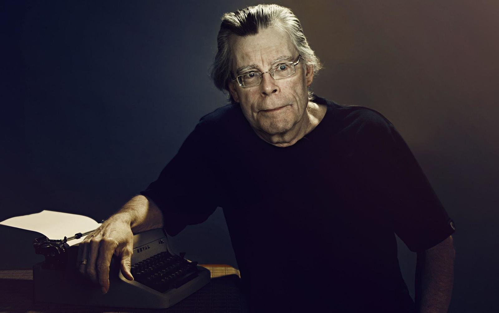

О нашем магазине
Адрес:

Наш офис находится по адресу: улица Профессора Попова, 5.
Всезнайка
Заказывайте книги одним кликом!
Мнение Стивена Кинга
Ответы на интересующие всех вопросы
В основном ваши сюжеты наполнены мистикой и ужасами. Что привело вас именно к этим жанрам?
Он уже был создан. Вот и все. Первый фильм, который я посмотрел, это был фильм ужасов. А именно - Бэмби. Когда маленькие оленята попадают в лесной пожар, я был просто в ужасе, хотя мне было одновременно и весело. Я не могу это объяснить. Моя жена и дети пьют кофе, а я нет, я больше люблю чай. Их даже не заставишь даже просто прикоснуться к еде с анчоусами, а вот я их обожаю. Я под завязку набит всякими странностями, которые в итоги и составляют меня.
Вам когда-нибудь бывает стыдно за то, что пугаете народ?
Нет. Как по мне, пугать людей - это весело. И социально приемлемо, взять к примеру огромную кучу фильмы ужасов. Да к тому же я вырос на таких комиксах как The Crypt of Terror.
Начав писать ужасы, вы вошли в наименее уважаемы жанр в литературе.
Ага. Это один из жанров, которые живут самостоятельно вне литературного сообщества, но что я мог поделать? Меня тянуло к нему. Мне нравится Д.Г. Лауренса. И поэзия Джеймса Дики, Эмиль Золя, Стейнбека... немного Фицжеральда. А Хемингуэй не для всех. Хемингуэй отстой, в основном. Если люди такое любят, ну и ладно. Но если бы я задался целью писать в таком стиле, то мои работы были бы пустыми и безжизненными, и это был бы уже не я. Что я этим хотел сказать - я лучше всего пишу в жанре ужасов.
И мало кто будет спорить.
Потому что начали уважать. Я уже говорил, что вся моя жизнь состоит в борьбе против разделения целых областей фантастики на "жанры", которые нельзя считать литературой. И это не тщеславие. Рэймонд Чандлер добился признания детективов. Люди, которые создали нечто невероятное, просто-напросто стирают установленные кем-то другим рамки дозволенного.
Многие критики были довольно жестоки по отношению к вам, когда вы только начинали писать.
В самом начале моей карьеры, The Village Voice сделали настолько обидную карикатуру на меня, что до сих пор больно вспоминать об этом. Это было изображение меня, поедающего деньги. И у меня было еще такое большое обрюзгшее лицо. Тогда бытовало мнение, что если фантастика разошлась большими тиражами, то это очень и очень плохо. Все, что доступно для простого народа обязательно должно быть тупым, так как простой народ очень глуп. А это элитаризм..
Но такое бытует и по сей день. Литературный критик Гарольд Блум набросился на вас, когда вы стали лауреатом Национальной Книжной Премии 10 лет назад.
Блум никогда от меня не отстанет, так как он один из тех критиков, которые не принимают популярную литературу, думая, что это говорит о том, какие они высокоинтеллектуальные. Он может сказать, что Марк Твен великий писатель, но он не поверит, если ему сказать, что Джим Томпсон последователь Натаниэля Гортона, так как он не читает таких людей как Томпсон. Он скажет: "Я его не читал, но знаю, что он отвратителен". Мичико Какутани, которая пишет рецензии для The New York Times, точно такая же. Она написала рецензию на книгу Дэвида Митчелла "Костяные часы", которая одна из лучших в этом году. Книга так же хороша, как "Щегол" Донны Тартт и произвела аналогичный литературный резонанс, так как объединяет в себе элементы фэнтези и научной фантастики. Но Какатани не хочет этого понимать. В этом Блум, Какатуни и ряд остальных серых кардиналов больше похожи на маленьких детей, которые говорят: " Я не могу это есть, потому что два вида еды на тарелке перемешались".
Тогда перейдем непосредственно к вашей новой книге "Возрождение", которая затрагивает тему религии. В частности, один из двух главных героев - священник, который разочаровывается в Боге после смерти своей семьи и читает проповедь о том, что религия -это сплошное мошенничество. Как много из этой проповеди отражение ваших суждений?
Я думаю, что организованная религия - это очень опасный инструмент управления людьми. Я вырос под сенью Методистской церкви, мы ходили в церковь каждое воскресение и в церковную школу летом. У нас не было выбора. Мы просто делали это и все. Поэтому все детские моменты в книге, можно сказать, автобиографичны. Но, будучи ребенком, у меня уже тогда были сомнения на этот счет. На уроках нам говорили, что все католики попадут в ад, потому что те поклоняются идолам. И я думал: "Все католики будут в аду, но моя тетя Молли вышла замуж за католика, у них 11 детей, они хорошие и милые люди, а один из детей мой очень хороший друг, но они все попадут в ад?" Но потом подумал "не, это все фигня". Но если это фигня, то тогда что есть правда?
Вы закончили писать цикл "Темная башня"?
Я никогда не покончу с "Темной башней". Все дело в том, что эти книги никогда не были отредактированы, так что я смотрю на них, будто они всего лишь первые наброски одной большой книги. И когда я добрался к пятой или шестой книге, я задумался: "Это действительно все один роман" И это сводит меня с ума. Я пытался выкроить время, чтобы их переписать, но есть она загвоздка. Один недостающий элемент - битва в месте под названием Джерико Хилл. И все это должно быть написано, я много думаю над этим, но все равно не знаю, как это сделать.
Вы боитесь за свои детища, за ваше наследие?
Да не особо. Здесь от меня уже ничего не зависит. Есть два варианта развития событий после смерти писателя: либо он становится знаменит, либо про него забывают. Кто-то конечно будет ворошить старое: "А кто такой этот Ирвинг Уоллес?". Но спросите кого-нибудь в школе, кто такой Сомерсет Моэм? Никто не ответит. Он писал книги, которые наделали не мало шуму в свое время. Но в отличии от Агаты Кристи, которая не была никогда так популярна, как сейчас, его никто не помнит. Агата была не так хороша как Моэм, но она ставила своей целью развлекать людей. Так что я не знаю, что будет в будущем.
Вы несколько раз грозились уйти на пенсию, но как мы видим, этого не произошло. Вы будете писать и после 80, а может и в более преклонном возрасте?
Да. А чем мне еще заниматься? Могу играть на гитаре, или смотреть телевизор. Но процесс написания доставляет мне большее удовольствие. А еще оно делает счастливыми меня и моих читателей.